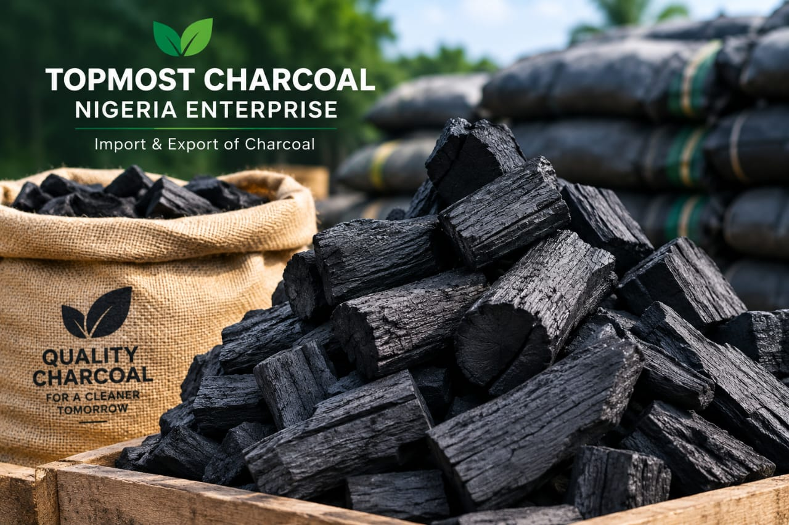

Premium Quality Charcoal for Home & Export

We supply clean, smokeless, and long-lasting charcoal across Nigeria and for export. Quality you can trust, from our kiln to your kitchen.
📍 Ibadan, Oyo State, Nigeria
📞 Call/WhatsApp: +234 800 000 0000